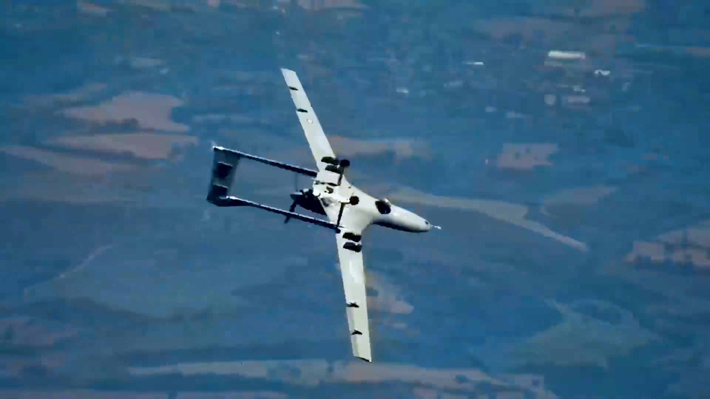
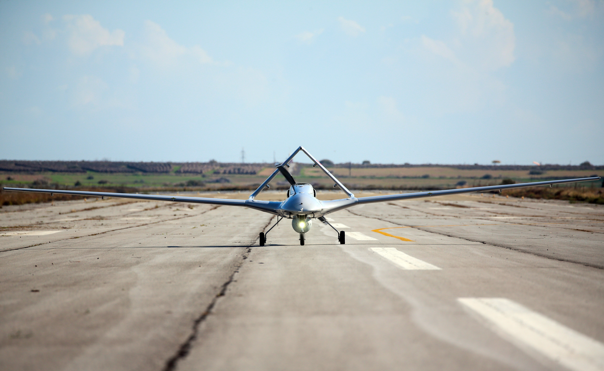

Genel Bilgi
Bayraktar TB2, Baykar tarafından geliştirilen taktik sınıf silahlı insansız hava aracıdır. Platform; keşif, gözetleme, istihbarat, hedef tespiti ve hassas vuruş görevleri için tasarlanmıştır.
Baykar’ın resmî tanıtımına göre TB2, tam otomatik taksi, kalkış, seyir, iniş ve park kabiliyetine sahip olup üç yedekli otopilot sistemiyle görev yapmaktadır. LOS ve BLOS haberleşme seçenekleriyle farklı operasyon senaryolarına uyum sağlayabilmektedir.
Platform, dört mühimmat istasyonu sayesinde farklı akıllı mühimmatları taşıyabilir ve taktik sınıfta uzun havada kalış ile hassas angajman yeteneğini bir araya getirir.



Teknik Özellikler
| Platform Sınıfı | Taktik SİHA / UCAV |
| Üretici | Baykar |
| Görev Profili | Keşif, gözetleme, istihbarat, hedef tespiti, hassas vuruş |
| Uzunluk | 6,5 m |
| Kanat Açıklığı | 12 m |
| Gövde Yapısı | Karma kompozit monokok gövde yapısı |
| Kuyruk Yapısı | İnverted V-tail |
| Pervane Düzeni | İtici tip, değişken hatveli 2 palli pervane |
| Azami Kalkış Ağırlığı | 700 kg |
| Faydalı Yük | 150 kg |
| Yakıt Kapasitesi | 300 litre |
| Motor Seçenekleri | Baykar TM100 veya Rotax 912 iS sınıfı içten yanmalı motor |
| Motor Gücü Sınıfı | 100 hp sınıfı |
| Seyir Hızı | 70 knot |
| Azami Hız | 120 knot |
| Servis Tavanı | 22.000 ft |
| Operasyon İrtifası | 16.000 ft |
| Rekor İrtifa | 27.030 ft |
| Havada Kalış | 20+ saat |
| Haberleşme | LOS ve BLOS |
| Kontrol Menzili | 150 km+ / görüş hattı ötesinde SATCOM destekli varyantlar |
| Yer Kontrol İstasyonu | NATO standardı shelter tabanlı, çapraz yedekli komuta-kontrol sistemi |
| Yer Kontrol Ekibi | Pilot, faydalı yük operatörü ve görev komutanı |
| Otopilot | 3 yedekli (triple redundant) otopilot sistemi |
| Uçuş Kabiliyeti | Tam otomatik taksi, kalkış, seyir, iniş ve park |
| Seyrüsefer | GPS bağımsız iç sensör füzyonu destekli seyrüsefer yeteneği |
| Uçuş Kontrol | Tam otonom görev icrası |
| Elektro-Optik Sistem | EO/IR keşif ve hedefleme sistemi |
| Lazer İşaretleme | Mevcut |
| Gerçek Zamanlı Veri | Anlık görüntü ve telemetri aktarımı |
| Mühimmat İstasyonu | 4 harici istasyon |
| Mühimmat Uyumu | MAM-L, MAM-C, KAYI serisi lazer güdümlü mini mühimmatlar |
| Silahlı Görev Yeteneği | Hassas vuruş ve silahlı keşif görevleri |
| Aviyonik Yaklaşım | Gelişmiş yazılım tabanlı görev yönetimi ve otonom uçuş altyapısı |
| Bakım Yaklaşımı | Saha koşullarına uygun modüler yapı |
| Öne Çıkan Özellik | Taktik sınıfta uzun havada kalış, tam otomatik uçuş ve hassas mühimmat taşıma kabiliyetinin birleşimi |